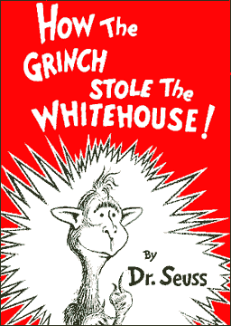

|

How the Grinch stole the White House
He didn't arrive there by the will of the Whos, but stole the election that he really did lose.
- - - - - - - - - -
by Doctored Seuss
 HE WHOS down in Whoville liked people a lot, HE WHOS down in Whoville liked people a lot,
But the Grinch in the White House most certainly did not.
He didn't arrive there by the will of the Whos,
But stole the election that he really did lose.
Vowed to "rule from the middle," then installed his regime.
(Did this really happen, or is it just a bad dream?)
He didn't listen to voters, just his friends he was pleasin'
Now, please don't ask why, who knows what's the reason.
It could be his heart wasn't working just right.
It could be, perhaps, that he wasn't too bright.
But I think that the most likely reason of all,
Is that both brain and heart were two sizes too small.
In times of great turmoil, this was bad news,
To have a government that ignores its Whos.
But the Whos shrugged their shoulders, went on with their work,
Their duties as citizens so casually did shirk.
They shopped at the mall and watched their TV
They drove a gas guzzling big SUV,
Oblivious to what was going on in DC,
Ignoring the threats to democracy.
They read the same papers that ran the same leads,
Reporting what only served corporate needs.
(For the policies affecting the lives of all nations
Were made by the giant U.S. Corporations.)
Big business grew fatter, fed by its own greed,
And by people who shopped for the things they didn't need.
But amidst all the apathy came signs of unrest,
The Whos came to see we were fouling our nest.
And the people who cared for the ideals of this nation
Began to discuss and exchange information:
The things they couldn't read, in the corporate-owned news,
Of FTAA meetings and CIA coups,
Of drilling for oil and restricting rights.
They published some books, created Websites,
Began to write letters, and use their e-mail
(Though Homeland Security might send them to jail!)
What began as a whisper soon grew to a roar,
These things going on they could no longer ignore.
They started to rise up and reach out to all
Let their voices be heard, they rose to the call,
To vote, to petition, to gather, dissent,
To question the policies of the "President."
As greed gained in power and power knew no shame
The Whos came together, sang "Not in our name!"
One by one from their sleep and their slumber they woke
The old and the young, all kinds of folk,
The black, brown and white, the gay, bi- and straight,
All united to sing, "Feed our hope, not our hate!
Stop stockpiling weapons and aiming for war!
Stop feeding the rich, start feeding the poor!
Stop storming the deserts to fuel SUVs!
Stop telling us lies on the mainstream TVs!
Stop treating our children as a market to sack!
Stop feeding them Barney, Barbie and Big Mac!
Stop trying to addict them to lifelong consuming,
In a time when severe global warming is looming!
Stop sanctions that are killing the kids in Iraq!
Start dealing with ours that are strung out on crack!"
A mighty sound started to rise and to grow,
"The old way of thinking simply must go!
Enough of God versus Allah, Muslim vs. Jew
With what lies ahead, it simply won't do.
No American dream that cares only for wealth
Ignoring the need for community health.
The rivers and forests are demanding their pay,
If we're to survive, we must walk a new way.
No more excessive and mindless consumption
Let's sharpen our minds and garner our gumption.
For the ideas are simple, but the practice is hard,
And not to be won by a poem on a card.
It needs the ideas and the acts of each Who,
So let's get together and plan what to do!"
And so they all gathered from all 'round the Earth
And from it all came a miraculous birth.
The hearts and the minds of the Whos they did grow,
Three sizes to fit what they felt and they know.
While the Grinches they shrank from their hate and their greed,
Bearing the weight of their every foul deed.
From that day onward the standard of wealth,
Was whatever fed the Whos spiritual health.
They gathered together to revel and feast,
And thanked all who worked to conquer their beast.
For although our story pits Grinches 'gainst Whos,
The true battle lies in what we daily choose.
For inside each Grinch is a tiny small Who,
And inside each Who is a tiny Grinch too.
One thrives on love and one thrives on greed.
Who will win out? It depends who you feed!

|